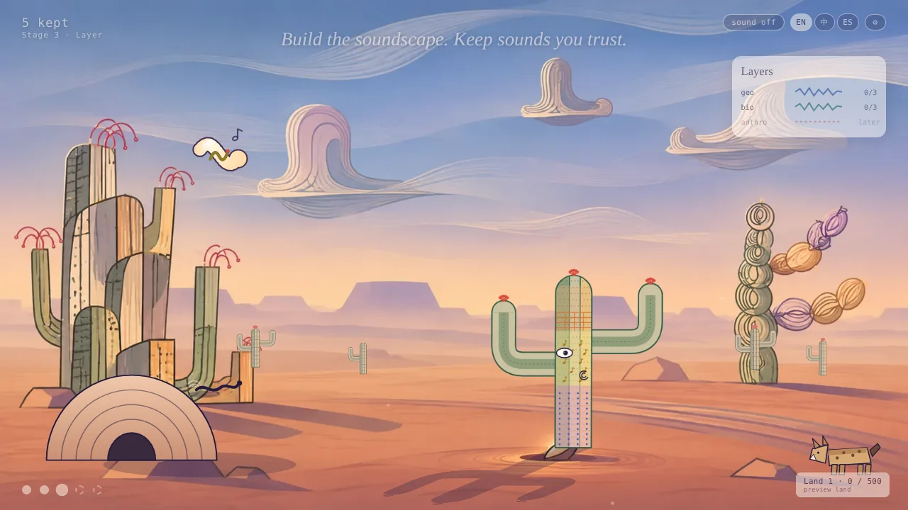
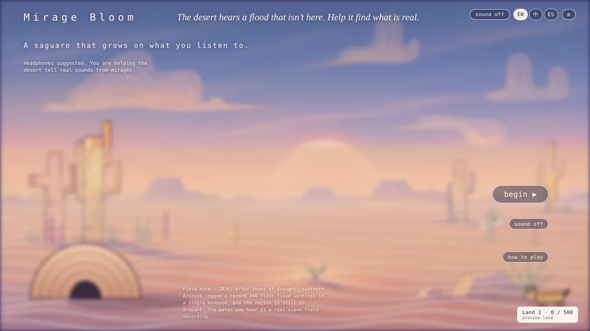
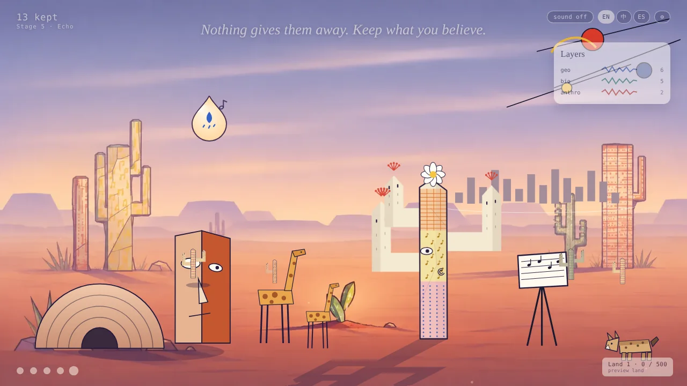

Listen. Hover a bubble, or tap it once on a touch screen. Its source appears on the land below.
Keep it if it is real. Click it, tap again, or press Enter. Real sounds drift a little every time they play.
Let it go if it is a mirage. Right-click, press X, or press and hold. A mirage repeats exactly and carries a faint electronic tell.
Read the shapes. Clouds, stars and crystals are weather and water. Animals and plants are living things. Human-made shapes are people and machines.
Five stages. Weather, wildlife, layers, people, echoes. At the end you plant your saguaro and can send a sound postcard.
The how-to-play card that opens the game.
What changed in Week 3
From demo to a place worth staying in.
Week 2 proved the loop. Week 3 made the world feel alive and gave every choice a consequence.
Every sound family has its own bubble shapes.
Shapes you can read
Weather and water are clouds, stars, drops and crystals. Animals and plants are leaves, owls, moons and cows. People and machines are cars, planes, trucks, feet and speech bubbles. A mirage can wear any shape, so shape tells you the family, never whether it is real.
A bobcat that bites mirages
Keep a mirage by mistake and the bubble sinks, the bobcat runs over and bites it, and it shatters. The bite also hurts one of the distant saguaros: a bite mark, then a broken top, then a dry, cracked trunk. They are never destroyed, but the desert remembers.
The bobcat bites a kept mirage. The distant saguaros show the damage.

Late afternoon, one of three versions that change as you keep sounds.
Four painted scenes
A dusty, stormy opening, a clear day, a late afternoon that shifts through three versions, and a dawn. They are AI-assisted paintings that reuse my Week 1 drawing, and they crossfade as the stages change. My saguaro takes the scene's shape and wears a pattern for every sound family you keep.
Too little water, then a flood
The opening plays a real-scene flood recording, because 2026 brought a flood to a drought. After years of dryness, southern Arizona logged a record 246 flash-flood warnings in a single monsoon, and the region is still in drought. Your first task is to find out which water is really there.

The opening: a hazy desert that hears a flood that is not here.

Echo: the grown saguaro in bloom at dawn.
An ending with a flute
When the saguaro blooms, a flute plays. You plant it, the land changes, and you choose one of three artworks for a sound postcard to download or send.
Sound library
Recorded, not synthesised.
Most sounds are now real recordings. Mirages replay one exact take, and a faint electronic layer underneath gives them away more gently as the stages go on.
Geophony
Wind, rain, thunder, sand, water (laps, bubbling geyser, gurgle, deep rumble) and the flood field recording.
Biophony
Cactus wren, wolf howl, rattlesnake, pig, horses (gallop, milling, whinny), dog and cow. Dove, woodpecker, owl, insects and hummingbird are still synthesised.
Anthrophony
Footsteps (grass and gravel), finger whistle, someone close by (cough, swallow, apple bite and chew), prop plane (throttle off, landing, fly-by), truck door and windshield wipers. Traffic, voices and music are still synthesised.
Mirage tells
Scanner, static, metal hits, low distorted hits and laser pulses, mixed quietly under every fake sound.
Finale
A flute when the saguaro blooms.
Previous weeks
Kept for reference, one page each.
The earlier work is still here. Open a week to read it or play that version.